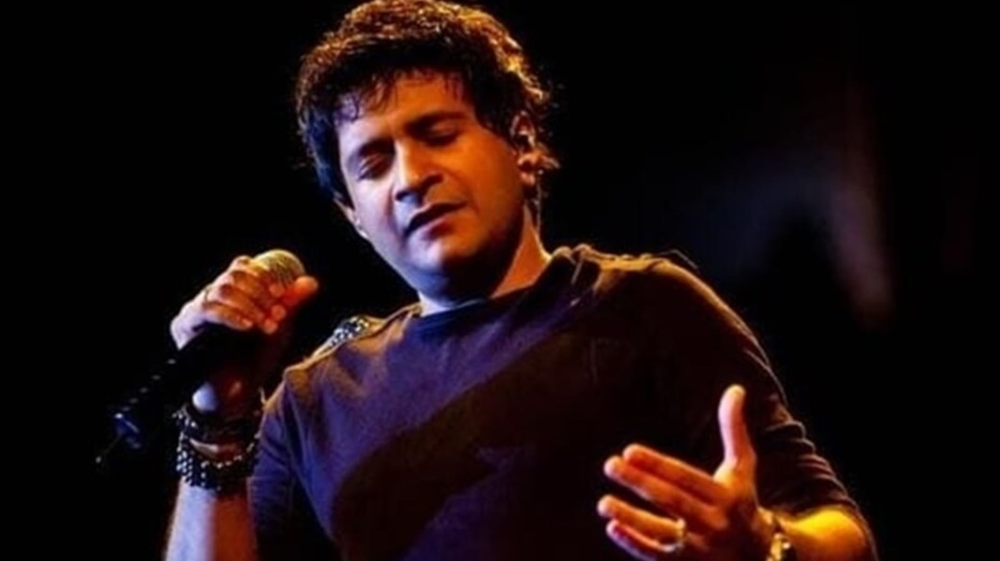

Krishnakumar Kunnath
(23 August 1968 – 31 May 2022)
(23 August 1968 – 31 May 2022)
Welcome to this tribute web page dedicated to the legendary playback singer KK, whose mesmerizing voice and soulful renditions have captivated audiences around the world. Join us as we celebrate the remarkable career of this musical icon, highlighting his journey, notable achievements, and the timeless melodies that have left an indelible mark on the Indian music industry.
Born as Krishnakumar Kunnath, KK discovered his passion for music at a young age. Hailing from Kerala, India, his journey began with singing in various local competitions and performing in college events. With determination and talent, KK embarked on a path that would soon establish him as a prominent figure in the world of playback singing.
KK's breakthrough in Bollywood came with the song "Chhod Aaye Hum" from the film "Maachis" in 1996. This soul-stirring track instantly struck a chord with listeners, introducing them to KK's soulful voice and setting the stage for his illustrious career. From that point on, there was no turning back for the talented singer.
One of KK's defining qualities as an artist is his versatility and ability to effortlessly transition between genres. Whether it's romantic ballads that tug at the heartstrings or high-energy tracks that make you groove, KK has showcased his range through numerous hit songs. His ability to evoke emotions and convey the essence of every composition has made him a favorite among music lovers of all ages.
KK has had the privilege of collaborating with some of the most renowned composers and lyricists in the industry. His partnerships with music maestros like A.R. Rahman, Vishal-Shekhar, Shankar-Ehsaan-Loy, and Pritam have resulted in timeless musical gems that continue to be cherished by fans worldwide. Each collaboration has showcased KK's ability to bring life to lyrics and elevate the beauty of the melodies.
Over the course of his career, KK has been honored with numerous awards and accolades for his exceptional contributions to music.
his talent has been recognized and celebrated by the industry and fans alike. These awards stand as a testament to the impact he has made on the world of music.
KK's discography is filled with countless evergreen hits that continue to resonate with audiences. From soulful tracks like-
his songs have become an integral part of our lives, evoking nostalgia and emotions with each play.
KK's mesmerizing voice and soulful renditions have made him a beloved figure in the music industry. Through this tribute web page, we celebrate his extraordinary talent, versatility, and contributions to the world of music. KK's melodies will continue to touch hearts and inspire generations to come, reminding us of the power of music to transcend boundaries and connect us all. Thank you, KK, for the magic you have brought into our lives.
In the realm of music, where emotions soar,
There's a voice that resonates, forevermore.
KK, you're an artist with a magical touch,
Your melodies have moved us, oh so much.
With each note you sing, you ignite a fire,
Your voice, a beacon, taking us higher.
From soulful ballads to energetic beats,
You've made our hearts dance to your rhythmic treats.
Your rendition of love, longing, and pain,
Has left an indelible mark, an eternal stain.
"Tadap Tadap" spoke of a heart torn apart,
And "Aankhon Mein Teri" touched our very heart.
Oh, KK, your voice, a gift so divine,
Your range, your versatility, forever shine.
You've captured our souls with every refrain,
Bringing solace, healing our joys and our pain.
Awards and accolades, they rightly adorn,
Your exceptional talent, so brilliantly born.
But beyond the fame, it's your essence we treasure,
Your dedication to music, an infinite pleasure.
In this tribute, we honor your art,
The passion and soul you pour in every part.
KK, you're an inspiration, a guiding light,
Your music resonates, both day and night.
Thank you, KK, for the melodies you've given,
For the moments of joy, the tears you've driven.
Your voice continues to touch our very core,
Forever grateful, we'll cherish it, evermore.